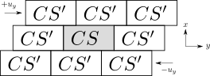

Lees-Edwards boundary conditions (Lees and Edwards, 1972) shear a periodic box without any solid boundary, so the whole box is in a pure linear shear, with no boundary effects. The copies of the box above slide one way and the copies below slide the other way (a grain that leaves through the top comes back in through the bottom, shifted sideways by the current offset). For more detail on the boundary, the Ludwig tutorial has a good write-up.

We used 100k particles (bidisperse DEM discs with radii 0.5 and 0.3, the mixture of
Maloney and Lemaître, 2006, at
a packing fraction of 0.86 and grain friction tan 30°), with every touching pair
joined by a parallel bond
(Potyondy and Cundall, 2004).
ec_bar = 107 is the bond's Young's modulus
Ec, and strength
(104 to 107) is its tensile and shear strength
c =
c (set equal, with no scatter):
where kn is the bond's normal stiffness (the shear stiffness is kn/2.5), and R = min(Ri, Rj), A = 2R and I = 2R3/3 are its radius, area and moment of inertia (per unit depth). A bond breaks once either stress reaches its strength. Each load step shears the box by Δγ = 5 × 10−5 (an affine step), and the Kishino solver relaxes every grain back to equilibrium, up to γ = 1. Each grain below is colored by the cumulative non-rigid motion around it. Weak bonds break everywhere into a dense network of shear bands, and stronger bonds fail along fewer and larger cracks that open up (the white areas are empty space).
An LLM wrote the equations based on the code.